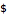

def fc(): openApp("Firefox") wait(3) type("l", KEY_CMD) # switch to address field type("http://") paste(name) wait(1) paste(address) type(Key.ENTER) Screen.wait(, 15) keyDown(Key.SHIFT+Key.CMD) type("f") keyUp(Key.SHIFT+Key.CMD) wait(1) type(Key.HOME) keyDown(Key.SHIFT+Key.CMD) type("4") wait(1) keyUp(Key.SHIFT+Key.CMD) wait(1) type(Key.SPACE) Screen.click() type(Key.PAGE_DOWN) keyDown(Key.SHIFT+Key.CMD) type("4") wait(1) keyUp(Key.SHIFT+Key.CMD) wait(1) type(Key.SPACE) Screen.click() if Screen.exists(): keyDown(Key.SHIFT+Key.CMD) type("4") wait(1) keyUp(Key.SHIFT+Key.CMD) wait(1) type(Key.SPACE) Screen.click() keyDown(Key.SHIFT+Key.CMD) wait(1) type("f") keyUp(Key.SHIFT+Key.CMD) wait(1) else: keyDown(Key.SHIFT+Key.CMD) type("4") wait(1) keyUp(Key.SHIFT+Key.CMD) wait(1) type(Key.SPACE) Screen.click() type(Key.PAGE_DOWN) if Screen.exists(): keyDown(Key.SHIFT+Key.CMD) type("4") wait(1) keyUp(Key.SHIFT+Key.CMD) wait(1) type(Key.SPACE) Screen.click() keyDown(Key.SHIFT+Key.CMD) type("f") keyUp(Key.SHIFT+Key.CMD) wait(1) else: keyDown(Key.SHIFT+Key.CMD) type("4") wait(1) keyUp(Key.SHIFT+Key.CMD) wait(1) type(Key.SPACE) Screen.click() if Screen.exists(): keyDown(Key.SHIFT+Key.CMD) type("4") wait(1) keyUp(Key.SHIFT+Key.CMD) wait(1) type(Key.SPACE) Screen.click() keyDown(Key.SHIFT+Key.CMD) type("f") keyUp(Key.SHIFT+Key.CMD) wait(1) else: keyDown(Key.SHIFT+Key.CMD) type("4") wait(1) keyUp(Key.SHIFT+Key.CMD) wait(1) type(Key.SPACE) Screen.click() keyDown(Key.SHIFT+Key.CMD) type("f") keyUp(Key.SHIFT+Key.CMD) def fm(): openApp("terminal") wait() type("mkdir ~/Desktop/testresults") #make parent directory type(Key.ENTER) type("Date | pbcopy") #copy time stamp type(Key.ENTER) type("mkdir ~/Desktop/testresults/'") keyDown(Key.CMD) type("v") #make timestamped child directory keyUp(Key.CMD) type("'") type(Key.ENTER) type("mv ~/Desktop/Screen* ~/Desktop/testresults/'") keyDown(Key.CMD) type("v") keyUp(Key.CMD) type("'") type(Key.ENTER) #move files closeApp("terminal")